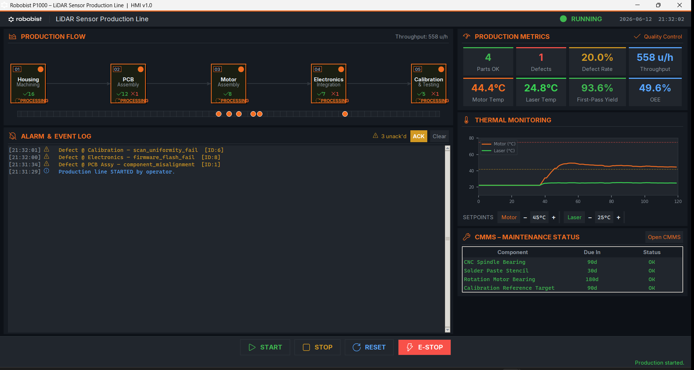
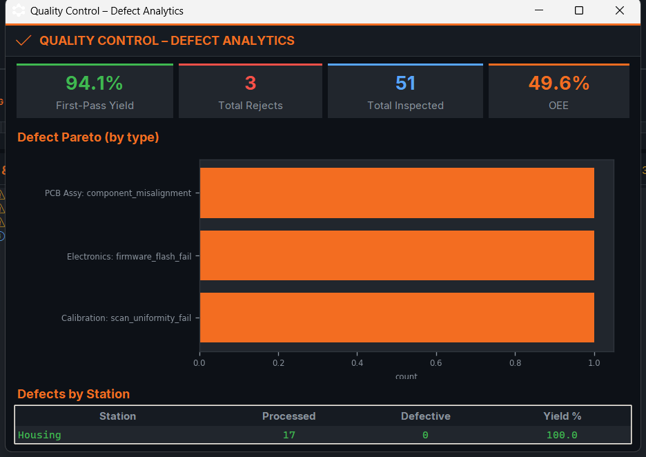
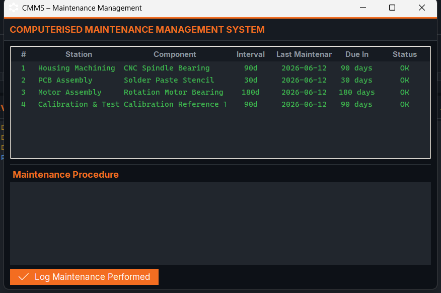
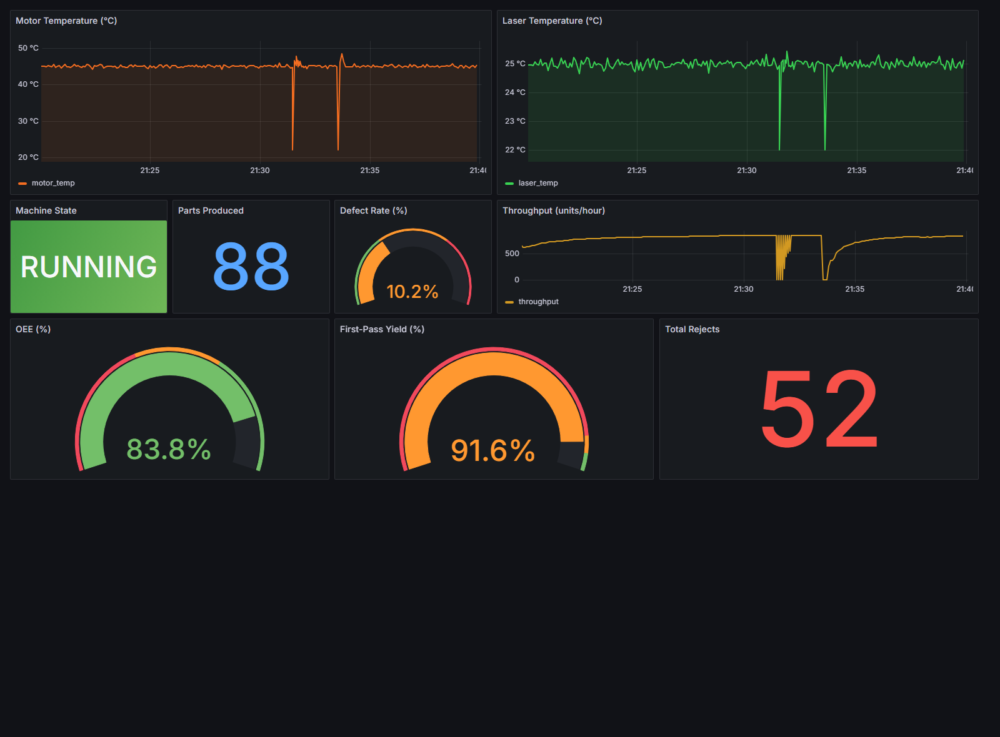

A full digital-twin simulation of a five-stage manufacturing line that assembles the 360° LiDAR sensor used in the Robobist P1000 autonomous pallet truck. A multithreaded Python backend, a professional dark-theme industrial HMI, dual-PID thermal control, and a complete SCADA / Quality-Control / CMMS stack feeding real-time InfluxDB + Grafana telemetry.
The Robobist P1000 navigates with a 360° LiDAR sensor. This project simulates the factory line that builds that sensor — five sequential stations, each with its own cycle time, defect signature, and quality gate. Parts flow through bounded queues on dedicated worker threads, exactly as a real PLC-driven line would sequence its stations.
Every station inspects its part and can mark it DEFECTIVE with a specific, human-readable
reason — solder_bridge, bearing_noise, scan_uniformity_fail, and so
on. The verdict, the defect type, and the part ID are written to the alarm log and pushed to the telemetry
stack in real time.
The product is the Robobist sensor, so the HMI wears the real Robobist brand — logo, the Inter typeface, and the #F36D21 orange. It is built to look and behave like a production SCADA terminal, not a class demo.
Part passed every station inspection and reached Calibration within spec — counted toward First-Pass Yield.
A station flagged a fault (missing component, torque out of spec, range error…) — rejected with a logged reason.
A single-screen operator terminal built in Tkinter. Live production flow with per-station counters and a processing animation, a thermal-monitoring chart, SCADA alarm acknowledgement, live temperature setpoint control, an embedded CMMS panel, and the four mandatory machine controls: START · STOP · RESET · E-STOP.
The backend is fully decoupled from the HMI. The line is a set of worker threads connected by bounded queues; the HMI only reads a shared ProductionMetrics snapshot and drains alarms. Station behaviour is pure data, so adding or retuning a stage never touches the engine.
CNC-machined enclosure. Defects: dimensional tolerance, surface roughness, material crack.
Populates the sensor board. Defects: solder bridge, missing component, misalignment.
360° rotation motor. Defects: bearing noise, torque out of spec, encoder error.
Firmware + power. Defects: firmware flash fail, voltage out of spec, connector fault.
Final range/angle test. Defects: range accuracy, angular resolution, scan uniformity.
# each station inspects the part and tags a reason
is_defect = random.random() < cfg["defect_rate"]
if is_defect:
sensor.quality = Quality.DEFECTIVE
defect = random.choice(cfg["defects"])
sensor.defect_reason = f"{cfg['short_name']}: {defect}"
self._add_alarm(
"WARNING",
f"Defect @ {cfg['short_name']} "
f"— {defect} [ID:{sensor.sensor_id}]",
)
with self._lock:
self.metrics.total_inspected += 1
if is_defect: # Quality-Control aggregates
self.metrics.total_rejects += 1
key = f"{cfg['short_name']}: {defect}"
self.metrics.defect_by_type[key] = \
self.metrics.defect_by_type.get(key, 0) + 1The motor and laser each run a software PID loop. A heater drives the temperature toward its setpoint while passive cooling pulls it back to ambient, so the loop settles at the target with realistic noise. Cross a hard limit and the line latches a FAULT. The operator can retune setpoints live from the HMI — true supervisory control.
def compute(self, measured: float) -> float:
now = time.time()
dt = max(now - self._last_time, 1e-3)
error = self.setpoint - measured
self._integral += error * dt
derivative = (error - self._prev_error) / dt
output = (self.kp * error
+ self.ki * self._integral
+ self.kd * derivative)
output = max(self.out_min, min(self.out_max, output))
self._prev_error, self._last_time = error, now
return outputAnti-windup clamping and a guarded dt keep the loop stable across variable UI frame rates.
All three optional modules from the brief are implemented as first-class features rather than checkboxes.


The HMI writes a metrics point to InfluxDB 2.7 every five seconds — temperatures, machine state, parts, defect rate, throughput, First-Pass Yield, OEE and rejects. Grafana (auto-provisioned through Docker Compose) renders a nine-panel dashboard on a five-second refresh. The whole stack starts with one command:
docker compose up -d
| Component | Technology | Role |
|---|---|---|
| Backend | Python 3 · threading · queue | Multithreaded line engine, defect logic, PID loops |
| HMI / GUI | Tkinter · Pillow · Matplotlib | Dark industrial terminal, flow canvas, thermal chart |
| Maintenance | SQLite (CMMS) | Schedules, procedures, operator maintenance logs |
| Telemetry DB | InfluxDB 2.7 | Time-series storage of every metric, 5 s cadence |
| Dashboards | Grafana 11 | 9 auto-provisioned panels, 5 s refresh |
| Containerisation | Docker Compose | One-command InfluxDB + Grafana stack |
| Branding | Inter · Segoe Fluent Icons | Real Robobist look — logo, font, #F36D21 accent |
| Platform | Windows 11 | Python 3.14 · tested end-to-end |
Full codebase — backend engine, HMI, CMMS, Grafana dashboard JSON, and the Docker Compose telemetry stack.